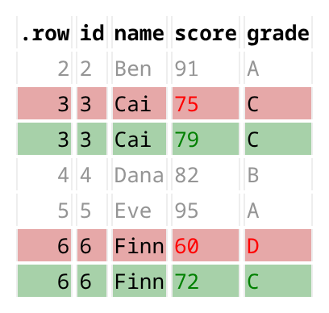

datadiffr compares two data frames and shows you the differences the way a code review shows you a diff: cell by cell, with context, as a styled HTML report. Changed rows are lined up old-above-new, colored red and green, with a few unchanged rows around each change for context.
It fills the report-oriented lane for data comparison. waldo and diffdf are excellent for console and text output; datadiffr targets the case where you want a self-contained HTML report to read, save, or share — and it stays actively maintained now that dataCompareR is archived and compareDF is in maintenance mode.
Installation
Install the development version from GitHub:
# install.packages("pak")
pak::pak("thays42/datadiffr")Quick start
compare_data() returns a datadiff_result; for a value diff its $rows holds the differences as a tidy data frame, with context rows around each change. Rows are matched by position by default, or by key columns with by =.
library(datadiffr)
before <- data.frame(
id = 1:6,
name = c("Ana", "Ben", "Cai", "Dana", "Eve", "Finn"),
score = c(88, 91, 75, 82, 95, 60),
grade = c("B", "A", "C", "B", "A", "D")
)
after <- data.frame(
id = 1:6,
name = c("Ana", "Ben", "Cai", "Dana", "Eve", "Finn"),
score = c(88, 91, 79, 82, 95, 72),
grade = c("B", "A", "C", "B", "A", "C")
)
compare_data(before, after, context_rows = c(1L, 1L))
#> datadiff: 2 changed, 0 added, 0 removed rows across 2 columns
#> Tolerance: 1.49011611938477e-08
#>
#> # A tibble: 7 × 8
#> .row .join_type .diff_type .source id name score grade
#> <int> <chr> <chr> <chr> <int> <chr> <dbl> <chr>
#> 1 2 both context <NA> 2 Ben 91 A
#> 2 3 both diff x 3 Cai 75 C
#> 3 3 both diff y 3 Cai 79 C
#> 4 4 both context <NA> 4 Dana 82 B
#> 5 5 both context <NA> 5 Eve 95 A
#> 6 6 both diff x 6 Finn 60 D
#> 7 6 both diff y 6 Finn 72 Cdiffdata() runs the same comparison and opens it as an HTML report in the RStudio viewer or your browser (or writes it to a file with output_file =):
diffdata(before, after)
How it compares
| Package | Default output | Row matching | Context rows | Status |
|---|---|---|---|---|
| datadiffr | Styled HTML report (+ console) | Position or key | Configurable | Active |
| waldo | Console / text | Object structure | — | Active |
| diffdf | Console / text | Key or position | — | Active |
arsenal (comparedf) |
Console / text | Key or position | — | Active |
| compareDF | HTML / console table | Key | Whole groups | Maintenance |
| dataCompareR | Text / HTML report | Key or position | — | Archived (CRAN 2026-02) |
datadiffr is the maintained option built around a report-quality HTML diff with configurable context rows. When the two frames have columns that differ in name or type, it reports those column differences instead of diffing values (a "schema" result; see compare_columns()).
Migrating from dataCompareR
datadiffr ships a clean-room rCompare() and friends (generateMismatchData(), saveReport()) with the same object shape as the archived dataCompareR, so existing scripts keep working. See vignette("migrating-from-datacomparer").